-
 German startup Panosome won the Pitch Session at Prague.bio Conference
German startup Panosome has won the startup competition at this year’s Prague.bio Conference with its innovative technology that harnesses the unique properties of a parasite responsible for sleeping sickness to develop vaccines and therapeutic antibodies.
German startup Panosome won the Pitch Session at Prague.bio Conference
German startup Panosome has won the startup competition at this year’s Prague.bio Conference with its innovative technology that harnesses the unique properties of a parasite responsible for sleeping sickness to develop vaccines and therapeutic antibodies.
-
 Czech researchers are tinkerers too. If they don’t have an equipment, they build it themselves
AI-driven drug discovery, state-of-the-art laboratories, novel compounds, and nanomaterials. Czech biotechnology generates nearly CZK 100 billion annually and is beginning to gain confidence.
Czech researchers are tinkerers too. If they don’t have an equipment, they build it themselves
AI-driven drug discovery, state-of-the-art laboratories, novel compounds, and nanomaterials. Czech biotechnology generates nearly CZK 100 billion annually and is beginning to gain confidence.
-
 Biotechnology in Central Europe is growing and attracting investors
The Central European region, including the Czech Republic, is well positioned to become a major biotechnology hub in the future. Strong scientific foundations, a dynamic startup and innovation ecosystem, and current geopolitical developments all contribute to this potential. Growing investor interest in the region is reflected in venture capital and private equity investment data. At the same time, Prague is hosting BioEquity Europe 2026, Europe’s largest conference focused on investments in biotech startups. This marks the first time in the event’s 26-year history that it has been held east of Germany.
Biotechnology in Central Europe is growing and attracting investors
The Central European region, including the Czech Republic, is well positioned to become a major biotechnology hub in the future. Strong scientific foundations, a dynamic startup and innovation ecosystem, and current geopolitical developments all contribute to this potential. Growing investor interest in the region is reflected in venture capital and private equity investment data. At the same time, Prague is hosting BioEquity Europe 2026, Europe’s largest conference focused on investments in biotech startups. This marks the first time in the event’s 26-year history that it has been held east of Germany.
-
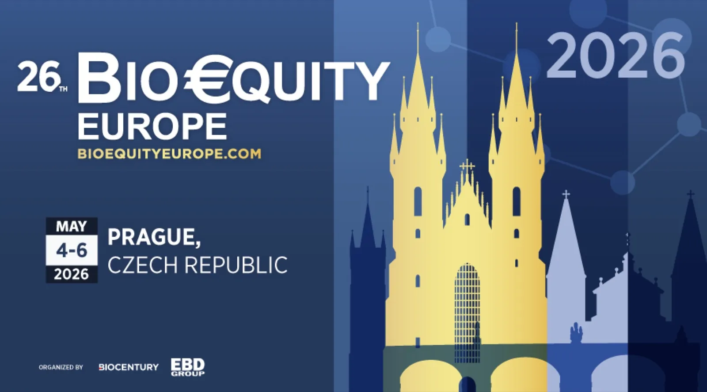
Biotech investors gather in Prague for the prestigious BioEquity Europe conference More than a thousand international investors and leading experts in biotechnology are heading to Prague. From May 4 to 6, the city will host the prestigious international BioEquity Europe conference, which will be held in Central and Eastern Europe for the first time in its 26-year history. The event will showcase innovative projects with the potential to advance the treatment of cancer and rare diseases, connecting them with investors. In doing so, it will help accelerate their development and market entry. -
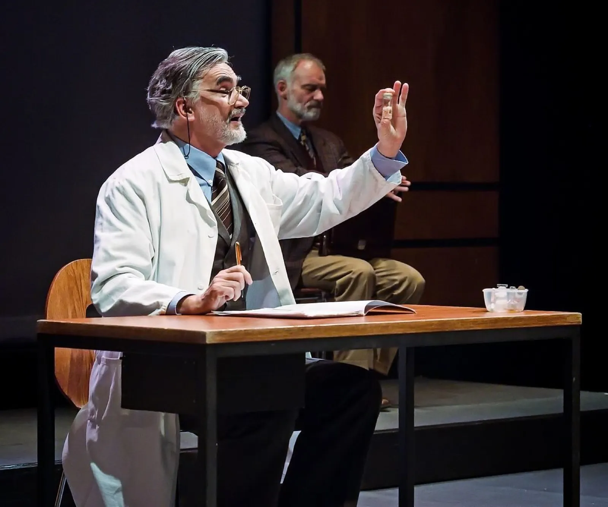
Connecting Central Europe’s Emerging Biotech to Europe’s Capital Engine The Czech Republic brought its leading life-science players to the City of Luxembourg as Great Europe, together with IOCB Tech as its General Partner, presented the Czech Life Sciences & Biotech Showcase, on December 10–12 2025. Prague.bio, the association representing major Czech life sciences stakeholders, was co-organising part of the conference to boost the sector’s global importance. -
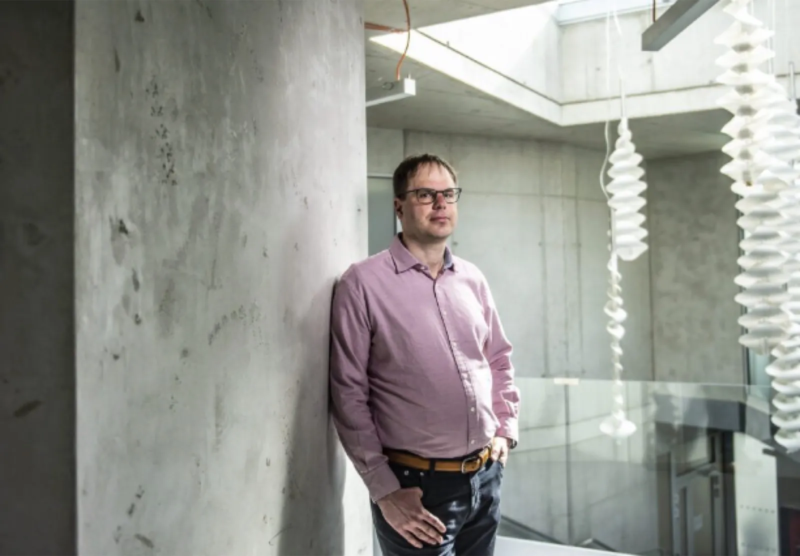
Interviews Sepsis costs lives and billions. A Czech company is heading to market with a solution Sepsis is a serious medical condition with a global impact. Each year, it affects nearly 50 million people worldwide and causes up to 11 million deaths. Even in developed countries, including Czechia, thousands of cases are reported annually, particularly in intensive care units. Yet diagnosis still relies largely on outdated culture-based methods that are slow and often fail. This has not only medical but also significant economic consequences — treatment costs per patient can reach tens of thousands of dollars. For this reason, the Czech company DIANA Biotechnologies is developing a new ultrasensitive PCR-based method that could fundamentally change the way sepsis is diagnosed. Initial clinical results show significantly higher sensitivity compared to existing solutions and strong potential for broad routine use. “If we succeed, a multi-billion-dollar market could open up,” says company founder Martin Dienstbier in an interview with Roklen24. -
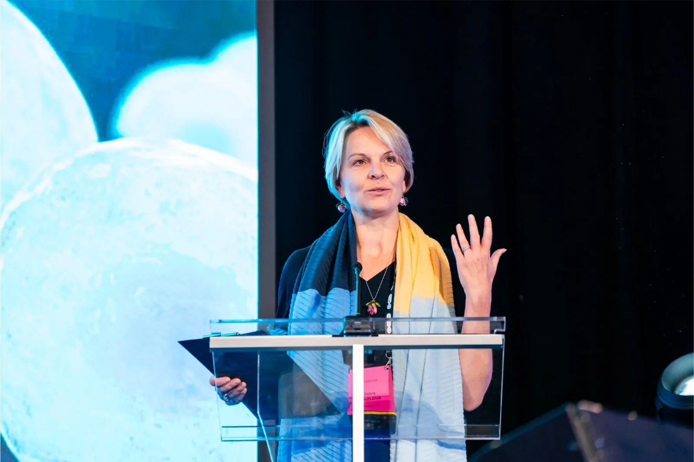
Petra Kinzlová: Czech biotech has much to offer, we want the world to see it The Prague.bio association was founded two years ago with the aim of connecting Czech and Central European players in the field of biotechnology and strengthening their international visibility. Under the leadership of Petra Kinzlová, the association’s membership base has more than doubled, and this year in May it will bring the prestigious international conference BioEquity Europe to Prague — for the first time ever in Central and Eastern Europe. -
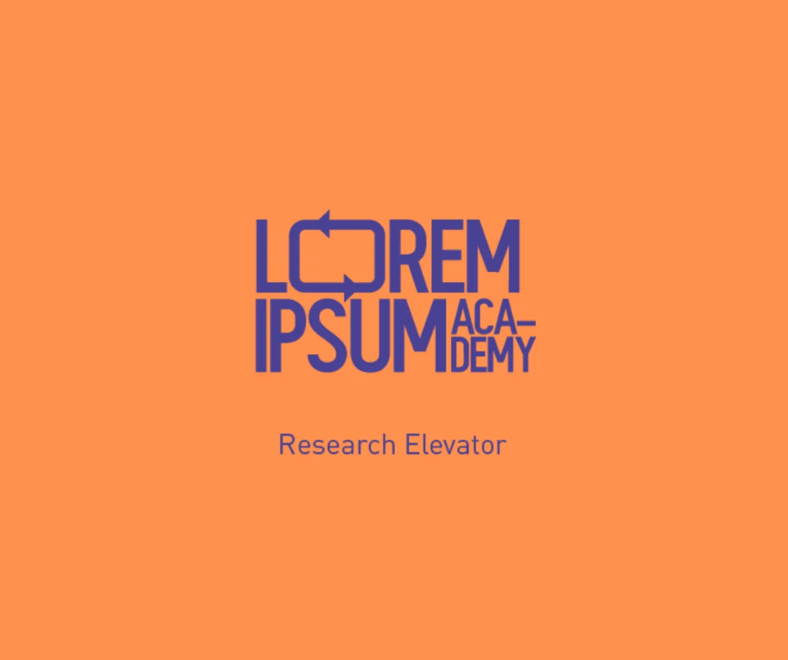
Executive Academy for scientists launches this week: Supporting the move from lab to business The first edition of the Executive Academy, a unique educational programme for researchers, starts this week in Prague. The new programme helps scientists in biotechnology and related fields develop managerial skills and learn how to transfer research results into practice. The official kick-off meeting brought together Academy participants, their lecturers, organisers, programme partners, and other key figures from the biotech community. -
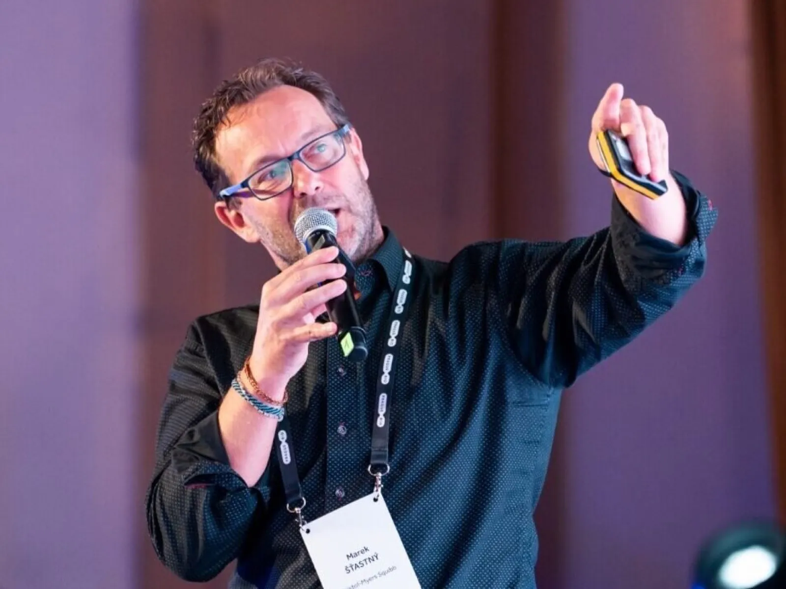
Czech startup Carebot and Bristol Myers Squibb collaborate to help detect lung cancer More than 5,000 people die from lung cancer in the Czech Republic each year. Unfortunately, the disease is detected late in many of them, when the chance of recovery is already small. Early detection of this insidious disease gives patients a significantly higher chance of survival. This is precisely what the collaboration between Czech startup Carebot and global biopharmaceutical company Bristol Myers Squibb (BMS) focuses on – early detection. -
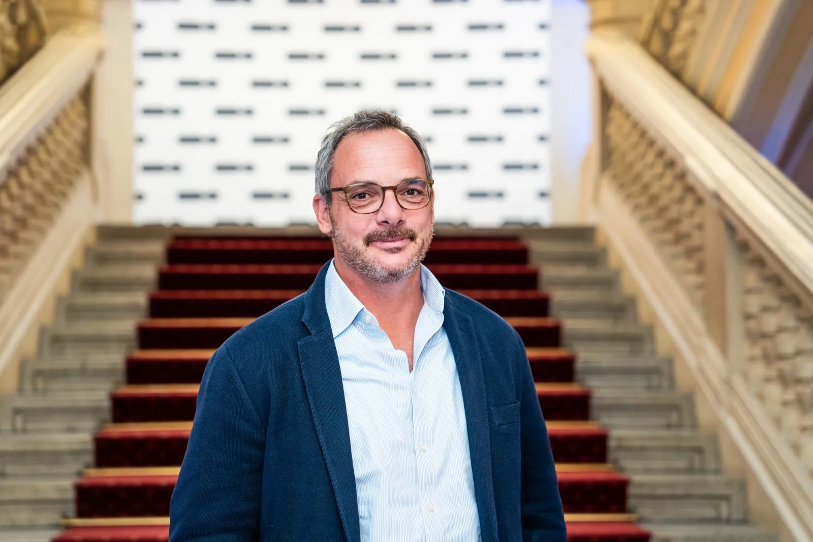
Articles He wanted to be an independent scientist — nobody would hire him This Slovak conquered Oxford anyway and built a billion-dollar startup -
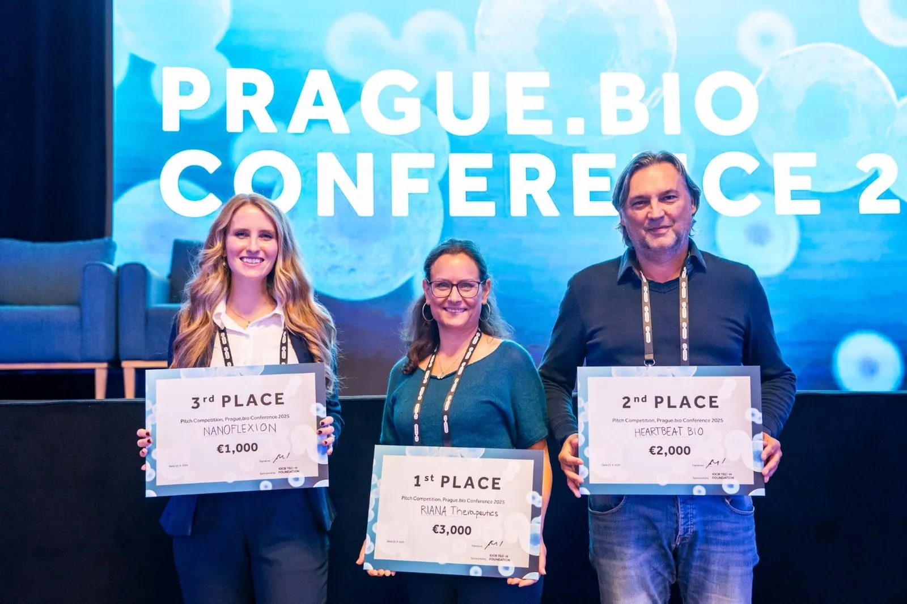
Press relases Startup Riana Therapeutics wins at Prague.bio Conference with innovative acute leukemia therapy Prague, September 26, 2025 – Riana Therapeutics, a startup developing a new treatment for acute myeloid leukemia, won the startup competition organized by the Prague.bio association. Second place went to HeartBeat.bio with its advanced platform for discovering new drugs for heart disease, particularly heart failure. Third place was awarded to Nanoflexion from the Technical University… -
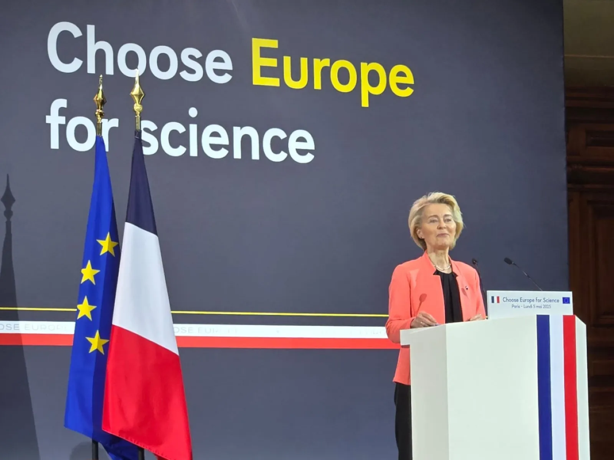
Articles Can Europe take the lead on biotech? With uncertainty across the global financial markets and research community, is it Europe’s time to take the lead on biotech? -
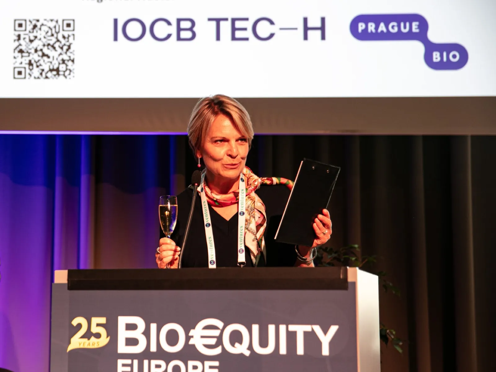
Events Bio€quity Europe 2026 to take place in Prague – first edition in Central and Eastern Europe Prague.bio cluster announced today that Bio€quity Europe will make its debut in Central and Eastern Europe in 2026, with the Czech capital selected to host the event. Scheduled for 4 to 6 May, the conference reflects Prague’s rising profile as a strategic gateway for investors seeking access to the region’s fast-growing life sciences ecosystem. -
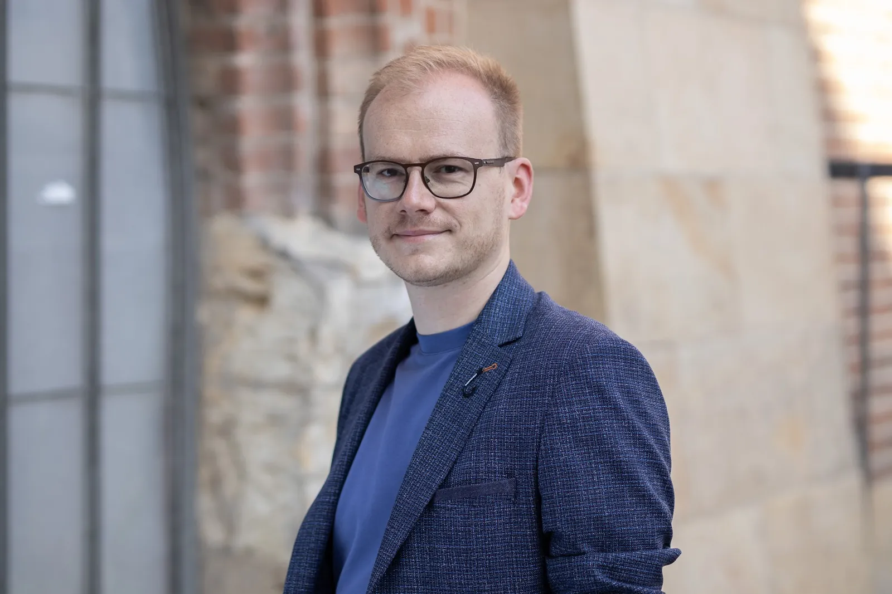
Interviews Czechia wants to be on the global biotechnology map The Czech Republic has significant scientific potential, and biotechnology is one of the most promising fields which importance will only grow in the future. We also have many successfully applied research results. However, the biotechnology sector needs greater visibility, both within the country and especially abroad. That is why new initiatives and clusters are emerging to strengthen international cooperation. One such initiative is Prague.bio, founded in 2023. Our goal is to establish Prague as a biotechnology hub in the heart of Europe, representing and connecting key players from companies, startups, research institutions, investors, and government bodies. After more than a year of operation, Prague.bio now has 21 members, including global pharmaceutical companies, promising startups, research institutions, and universities. -
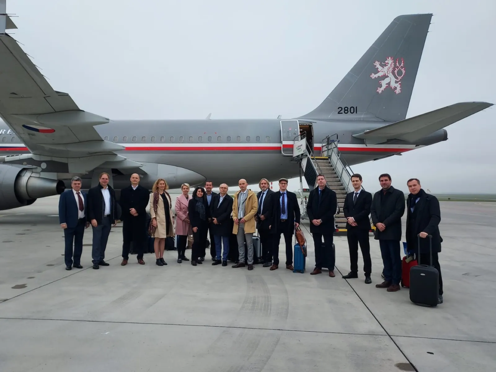
Prague.bio members participate in business mission with Czech president in Switzerland Key representatives from Prague.bio, IOCB Tech and other leading members of the Czech biotech community, participated in a high-profile business mission in Switzerland, which accompanied the President of the Czech Republic, Petr Pavel, on his state visit. Organized by the Czech Chamber of Commerce, this mission aimed to deepen commercial and research partnerships between the Czech Republic and Switzerland, particularly in the fields of biotechnology, pharmaceuticals, and innovation. -
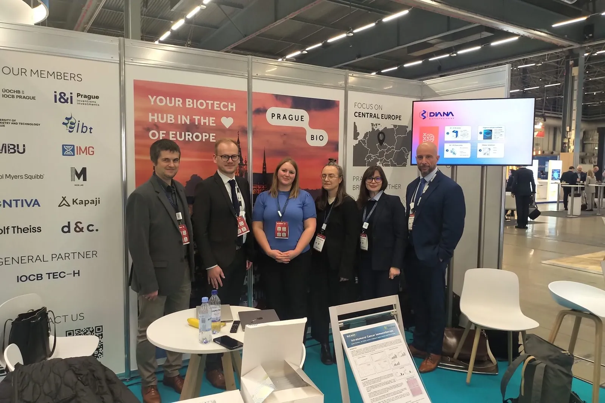
IOCB Tech family and Prague.bio spotlight Czech biotech innovation at Bio-Europe in Stockholm Celebrating 30 years of fostering global partnerships in the life sciences, this year’s BIO-Europe conference has taken on a distinctly Swedish flavour with a special nod to ABBA. The iconic biotech gathering, nowadays held in Stockholm is not only a celebration of three decades of collaboration but also a showcase of innovation at the heart of the industry. The IOCB Tech Family, Prague.bio and other companies are proud to represent the Czech biotech sector at this landmark event, where ABBA-themed sessions are sparking creative discussions and new partnerships. -
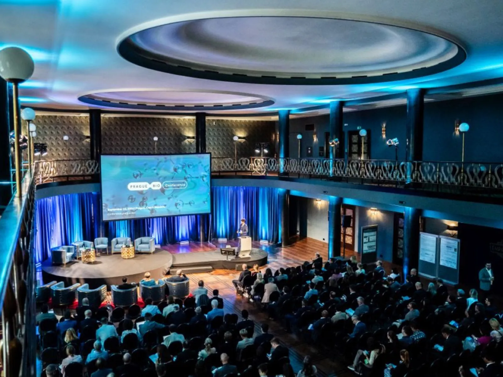
Biotechnology organization Prague.bio celebrates its 1-year anniversary The second edition of Prague.bio Conference, held on this occasion, brought together global experts on technology transfer and the creation of biotech startups, awarded the best startup presentations and introduced the upcoming educational academy for future spin-off managers. -
 Bristol Myers Squibb to support the development of biotechnology in the Czech Republic
One of the world’s largest biopharmaceutical companies, Bristol Myers Squibb, is joining Prague.bio, an association focused on advancing the biotechnology sector in the Czech Republic. Through its membership, Bristol Myers Squibb aims to support the promising ideas from Czech scientific institutions. Globally, the company focuses on cardiology, neurology, gene therapy, and innovations in cancer research, particularly immunotherapy.
Bristol Myers Squibb to support the development of biotechnology in the Czech Republic
One of the world’s largest biopharmaceutical companies, Bristol Myers Squibb, is joining Prague.bio, an association focused on advancing the biotechnology sector in the Czech Republic. Through its membership, Bristol Myers Squibb aims to support the promising ideas from Czech scientific institutions. Globally, the company focuses on cardiology, neurology, gene therapy, and innovations in cancer research, particularly immunotherapy.
-
 Prague.bio joins EuropaBio: integrating biotech in the Czech Republic
EuropaBio is pleased to announce that Prague.bio has joined as a representative of biotechnology innovation within the Czech Republic.
Prague.bio joins EuropaBio: integrating biotech in the Czech Republic
EuropaBio is pleased to announce that Prague.bio has joined as a representative of biotechnology innovation within the Czech Republic.
-
 The first edition of the IP Clinic was conducted in collaboration with Dentons
Prague.bio is always seeking ways to foster the expertise and skills of its members. Thanks to ongoing cooperation with Dentons Patent Solutions, we organised the first edition of IP Clinic on Monday, April 15 – a workshop on IP strategies focusing on TTOs and biotech start-ups.
The first edition of the IP Clinic was conducted in collaboration with Dentons
Prague.bio is always seeking ways to foster the expertise and skills of its members. Thanks to ongoing cooperation with Dentons Patent Solutions, we organised the first edition of IP Clinic on Monday, April 15 – a workshop on IP strategies focusing on TTOs and biotech start-ups.
-
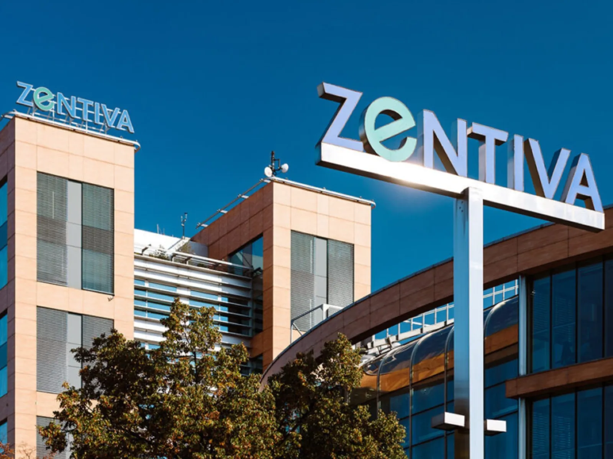
Prague.bio has expanded its ranks with a significant industry representative – Zentiva joins the association Prague.bio is a professional association aimed at developing the biotechnology sector in the Czech Republic and assisting in its visibility on the international stage. So far, it has brought together institutions representing highly professional research centers with a strong influence on the development of new drugs, diagnostic methods, and other medical technologies. Now, the first industry representative, Zentiva, has joined the Prague.bio biotechnology cluster. - Petra Kinzlova became the new director of the Prague.bio cluster Prague, February 1, 2024 – Since February 2024, Petra Kinzlova has succeeded Jiri Fusek as the new CEO of Prague.bio. Jiri has moved to the position of Managing Director and will be responsible for organizing the Prague.bio Conference.
No articles in this category yet.